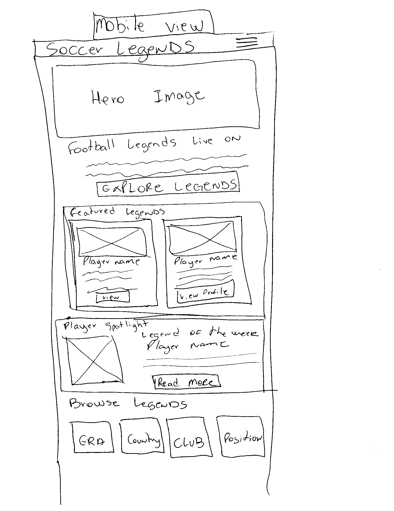
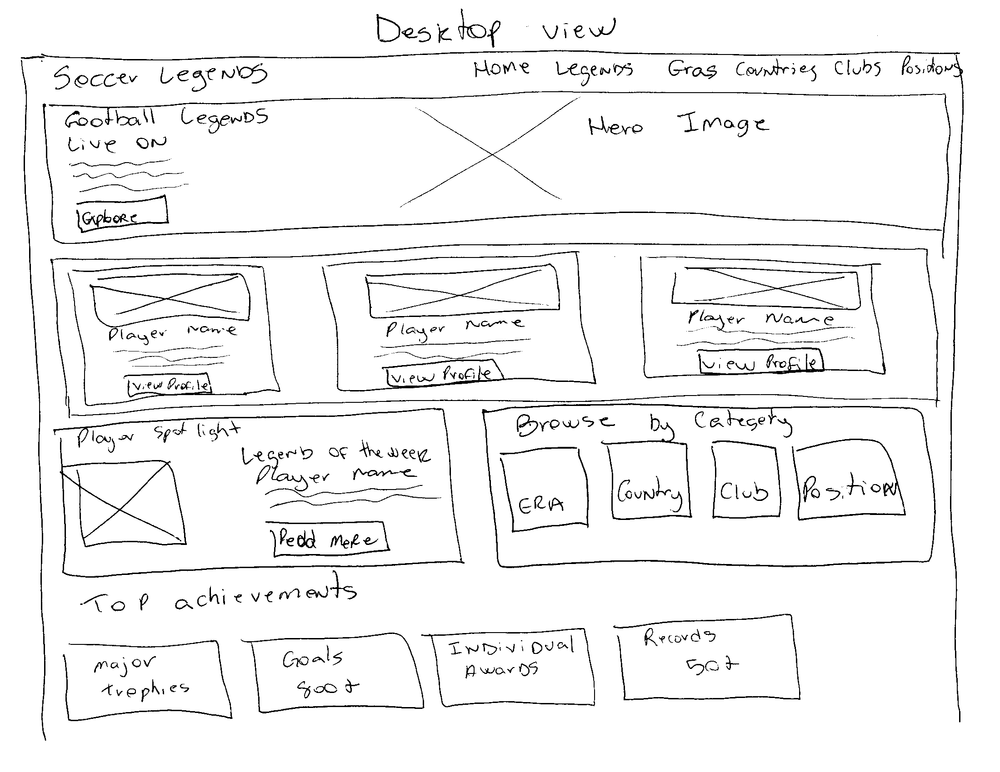

Site Name
Soccer Legends
The name "Soccer Legends" represents a website focused on legendary soccer players from different generations. The name was selected because it clearly communicates the purpose of the website and its focus on players who have made a significant impact on the history of soccer.
Site Purpose
The purpose of Soccer Legends is to provide soccer fans with information about legendary players from different eras. The website will feature player profiles, career achievements, statistics, clubs, national teams, and other information that helps visitors learn more about the players who shaped the history of soccer.
Scenarios
- What are the major achievements and career statistics of a legendary soccer player?
- Which clubs and national teams did a particular soccer legend play for?
- How can I discover legendary soccer players from different generations?
Color Scheme
Dark Green
#0B3D2E
Used for the header, navigation, footer, headings, and major sections of the website.
Gold
#D4AF37
Used as an accent color for buttons, links, borders, and important highlights.
Off White
#F7F7F2
Used as the primary background color to provide a clean and readable layout.
Dark Charcoal
#1F1F1F
Used primarily for body text and other readable content.
Typography
Montserrat
Montserrat will be used for headings, navigation, buttons, and other important titles throughout the website.
Roboto
Roboto will be used for paragraphs, descriptions, lists, and other body text because it is clean and easy to read.
Wireframes
Mobile View

Desktop View
